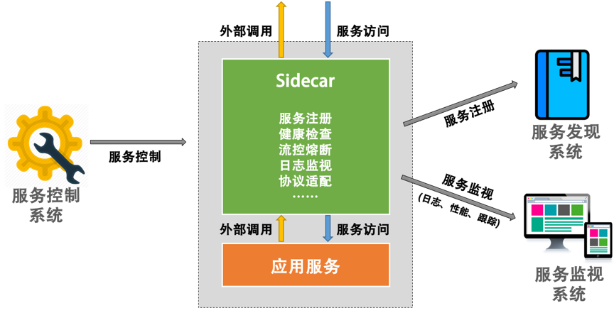

- 000 开篇词 洞悉技术的本质，享受科技的乐趣.md.html
- 001 程序员如何用技术变现（上）.md.html
- 002 程序员如何用技术变现（下）.md.html
- 003 Equifax信息泄露始末.md.html
- 004 从Equifax信息泄露看数据安全.md.html
- 005 何为技术领导力.md.html
- 006 如何拥有技术领导力.md.html
- 007 推荐阅读：每个程序员都该知道的事.md.html
- 008 Go语言，Docker和新技术.md.html
- 009 答疑解惑：渴望、热情和选择.md.html
- 010 如何成为一个大家愿意追随的Leader？.md.html
- 011 程序中的错误处理：错误返回码和异常捕捉.md.html
- 012 程序中的错误处理：异步编程和最佳实践.md.html
- 013 魔数 0x5f3759df.md.html
- 014 推荐阅读：机器学习101.md.html
- 015 时间管理：同扭曲时间的事儿抗争.md.html
- 016 时间管理：投资赚取时间.md.html
- 017 故障处理最佳实践：应对故障.md.html
- 018 故障处理最佳实践：故障改进.md.html
- 019 答疑解惑：我们应该能够识别的表象和本质.md.html
- 020 分布式系统架构的冰与火.md.html
- 021 从亚马逊的实践，谈分布式系统的难点.md.html
- 022 分布式系统的技术栈.md.html
- 023 分布式系统关键技术：全栈监控.md.html
- 024 分布式系统关键技术：服务调度.md.html
- 025 分布式系统关键技术：流量与数据调度.md.html
- 026 洞悉PaaS平台的本质.md.html
- 027 推荐阅读：分布式系统架构经典资料.md.html
- 028 编程范式游记（1）- 起源.md.html
- 029 编程范式游记（2）- 泛型编程.md.html
- 030 编程范式游记（3） - 类型系统和泛型的本质.md.html
- 031 Git协同工作流，你该怎样选.md.html
- 032 推荐阅读：分布式数据调度相关论文.md.html
- 033 编程范式游记（4）- 函数式编程.md.html
- 034 编程范式游记（5）- 修饰器模式.md.html
- 035 编程范式游记（6）- 面向对象编程.md.html
- 036 编程范式游记（7）- 基于原型的编程范式.md.html
- 037 编程范式游记（8）- Go 语言的委托模式.md.html
- 038 编程范式游记（9）- 编程的本质.md.html
- 039 编程范式游记（10）- 逻辑编程范式.md.html
- 040 编程范式游记（11）- 程序世界里的编程范式.md.html
- 041 弹力设计篇之“认识故障和弹力设计”.md.html
- 042 弹力设计篇之“隔离设计”.md.html
- 043 弹力设计篇之“异步通讯设计”.md.html
- 044 弹力设计篇之“幂等性设计”.md.html
- 045 弹力设计篇之“服务的状态”.md.html
- 046 弹力设计篇之“补偿事务”.md.html
- 047 弹力设计篇之“重试设计”.md.html
- 048 弹力设计篇之“熔断设计”.md.html
- 049 弹力设计篇之“限流设计”.md.html
- 050 弹力设计篇之“降级设计”.md.html
- 051 弹力设计篇之“弹力设计总结”.md.html
- 052 区块链技术 - 区块链的革命性及技术概要.md.html
- 053 区块链技术 - 区块链技术细节 - 哈希算法.md.html
- 054 区块链技术 - 区块链技术细节 - 加密和挖矿.md.html
- 055 区块链技术 - 去中心化的共识机制.md.html
- 056 区块链技术 - 智能合约.md.html
- 057 区块链技术 - 传统金融和虚拟货币.md.html
- 058 管理设计篇之分布式锁.md.html
- 059 管理设计篇之配置中心.md.html
- 060 管理设计篇之边车模式.md.html
- 061 管理设计篇之服务网格.md.html
- 062 管理设计篇之网关模式.md.html
- 063 管理设计篇之部署升级策略.md.html
- 064 性能设计篇之缓存.md.html
- 065 性能设计篇之异步处理.md.html
- 066 性能设计篇之数据库扩展.md.html
- 067 性能设计篇之秒杀.md.html
- 068 性能设计篇之边缘计算.md.html
- 069 程序员练级攻略（2018）：开篇词.md.html
- 070 程序员练级攻略（2018）：零基础启蒙.md.html
- 071 程序员练级攻略（2018）：正式入门.md.html
- 072 程序员练级攻略（2018）：程序员修养.md.html
- 073 程序员练级攻略（2018）：编程语言.md.html
- 074 程序员练级攻略：理论学科.md.html
- 075 程序员练级攻略（2018）：系统知识.md.html
- 076 程序员练级攻略（2018）：软件设计.md.html
- 077 程序员练级攻略（2018）：Linux系统、内存和网络.md.html
- 078 程序员练级攻略（2018）：异步IO模型和Lock-Free编程.md.html
- 079 程序员练级攻略（2018）：Java底层知识.md.html
- 080 程序员练级攻略（2018）：数据库.md.html
- 081 程序员练级攻略（2018）：分布式架构入门.md.html
- 082 程序员练级攻略（2018）：分布式架构经典图书和论文.md.html
- 083 程序员练级攻略（2018）：分布式架构工程设计.md.html
- 084 程序员练级攻略（2018）：微服务.md.html
- 085 程序员练级攻略（2018）：容器化和自动化运维.md.html
- 086 程序员练级攻略（2018）：机器学习和人工智能.md.html
- 087 程序员练级攻略（2018）：前端基础和底层原理.md.html
- 088 程序员练级攻略（2018）：前端性能优化和框架.md.html
- 089 程序员练级攻略（2018）：UIUX设计.md.html
- 090 程序员练级攻略（2018）：技术资源集散地.md.html
- 091 程序员面试攻略：面试前的准备.md.html
- 092 程序员面试攻略：面试中的技巧.md.html
- 093 程序员面试攻略：面试风格.md.html
- 094 程序员面试攻略：实力才是王中王.md.html
- 095 高效学习：端正学习态度.md.html
- 096 高效学习：源头、原理和知识地图.md.html
- 097 高效学习：深度，归纳和坚持实践.md.html
- 098 高效学习：如何学习和阅读代码.md.html
- 099 高效学习：面对枯燥和量大的知识.md.html
- 100 高效沟通：Talk和Code同等重要.md.html
- 101 高效沟通：沟通阻碍和应对方法.md.html
- 102 高效沟通：沟通方式及技巧.md.html
- 103 高效沟通：沟通技术.md.html
- 104 高效沟通：好老板要善于提问.md.html
- 105 高效沟通：好好说话的艺术.md.html
- 106 加餐 谈谈我的“三观”.md.html
- 107 结束语 业精于勤，行成于思.md.html
060 管理设计篇之边车模式
所谓的边车模式，对应于我们生活中熟知的边三轮摩托车。也就是说，我们可以通过给一个摩托车加上一个边车的方式来扩展现有的服务和功能。这样可以很容易地做到 " 控制 " 和 " 逻辑 " 的分离。
也就是说，我们不需要在服务中实现控制面上的东西，如监视、日志记录、限流、熔断、服务注册、协议适配转换等这些属于控制面上的东西，而只需要专注地做好和业务逻辑相关的代码，然后，由 " 边车 " 来实现这些与业务逻辑没有关系的控制功能。
边车模式设计
具体来说，你可以理解为，边车就有点像一个服务的 Agent，这个服务所有对外的进出通讯都通过这个 Agent 来完成。这样，我们就可以在这个 Agent 上做很多文章了。但是，我们需要保证的是，这个 Agent 要和应用程序一起创建，一起停用。
边车模式有时候也叫搭档模式，或是伴侣模式，或是跟班模式。就像我们在《编程范式游记》中看到的那样，编程的本质就是将控制和逻辑分离和解耦，而边车模式也是异曲同工，同样是让我们在分布式架构中做到逻辑和控制分离。
对于像 " 监视、日志、限流、熔断、服务注册、协议转换……" 这些功能，其实都是大同小异，甚至是完全可以做成标准化的组件和模块的。一般来说，我们有两种方式。
- 一种是通过 SDK、Lib 或 Framework 软件包方式，在开发时与真实的应用服务集成起来。
- 另一种是通过像 Sidecar 这样的方式，在运维时与真实的应用服务集成起来。
这两种方式各有优缺点。
- 以软件包的方式可以和应用密切集成，有利于资源的利用和应用的性能，但是对应用有侵入，而且受应用的编程语言和技术限制。同时，当软件包升级的时候，需要重新编译并重新发布应用。
- 以 Sidecar 的方式，对应用服务没有侵入性，并且不用受到应用服务的语言和技术的限制，而且可以做到控制和逻辑的分开升级和部署。但是，这样一来，增加了每个应用服务的依赖性，也增加了应用的延迟，并且也会大大增加管理、托管、部署的复杂度。
注意，对于一些 " 老的系统 "，因为代码太老，改造不过来，我们又没有能力重写。比如一些银行里的很老的用 C 语言或是 COBAL 语言写的子系统，我们想把它们变成分布式系统，需要对其进行协议的改造以及进行相应的监控和管理。这个时候，Sidecar 的方式就很有价值了。因为没有侵入性，所以可以很快地低风险地改造。
Sidecar 服务在逻辑上和应用服务部署在一个结点中，其和应用服务有相同的生命周期。对比于应用程序的每个实例，都会有一个 Sidecar 的实例。Sidecar 可以很快也很方便地为应用服务进行扩展，而不需要应用服务的改造。比如：
- Sidecar 可以帮助服务注册到相应的服务发现系统，并对服务做相关的健康检查。如果服务不健康，我们可以从服务发现系统中把服务实例移除掉。
- 当应用服务要调用外部服务时， Sidecar 可以帮助从服务发现中找到相应外部服务的地址，然后做服务路由。
- Sidecar 接管了进出的流量，我们就可以做相应的日志监视、调用链跟踪、流控熔断……这些都可以放在 Sidecar 里实现。
- 然后，服务控制系统可以通过控制 Sidecar 来控制应用服务，如流控、下线等。
于是，我们的应用服务则可以完全做到专注于业务逻辑。

注意，如果把 Sidecar 这个实例和应用服务部署在同一台机器中，那么，其实 Sidecar 的进程在理论上来说是可以访问应用服务的进程能访问的资源的。比如，Sidecar 是可以监控到应用服务的进程信息的。另外，因为两个进程部署在同一台机器上，所以两者之间的通信不存在明显的延迟。也就是说，服务的响应延迟虽然会因为跨进程调用而增加，但这个增加完全是可以接受的。
另外，我们可以看到这样的部署方式，最好是与 Docker 容器的方式一起使用的。为什么 Docker 一定会是分布式系统或是云计算的关键技术，相信你从我的这一系列文章中已经看到其简化架构的部署和管理的重要作用。否则，这么多的分布式架构模式实施起来会有很多麻烦。
边车设计的重点
首先，我们要知道边车模式重点解决什么样的问题。
- 控制和逻辑的分离。
- 服务调用中上下文的问题。
我们知道，熔断、路由、服务发现、计量、流控、监视、重试、幂等、鉴权等控制面上的功能，以及其相关的配置更新，本质来上来说，和服务的关系并不大。但是传统的工程做法是在开发层面完成这些功能，这就会导致各种维护上的问题，而且还会受到特定语言和编程框架的约束和限制。
而随着系统架构的复杂化和扩张，我们需要更统一地管理和控制这些控制面上的功能，所以传统的在开发层面上完成控制面的管理会变得非常难以管理和维护。这使得我们需要通过 Sidecar 模式来架构我们的系统。
边车模式从概念上理解起来比较简单，但是在工程实现上来说，需要注意以下几点。
- 进程间通讯机制是这个设计模式的重点，千万不要使用任何对应用服务有侵入的方式，比如，通过信号的方式，或是通过共享内存的方式。最好的方式就是网络远程调用的方式（因为都在 127.0.0.1 上通讯，所以开销并不明显）。
- 服务协议方面，也请使用标准统一的方式。这里有两层协议，一个是 Sidecar 到 service 的内部协议，另一个是 Sidecar 到远端 Sidecar 或 service 的外部协议。对于内部协议，需要尽量靠近和兼容本地 service 的协议；对于外部协议，需要尽量使用更为开放更为标准的协议。但无论是哪种，都不应该使用与语言相关的协议。
- 使用这样的模式，需要在服务的整体打包、构建、部署、管控、运维上设计好。使用 Docker 容器方面的技术可以帮助你全面降低复杂度。
- Sidecar 中所实现的功能应该是控制面上的东西，而不是业务逻辑上的东西，所以请尽量不要把业务逻辑设计到 Sidecar 中。
- 小心在 Sidecar 中包含通用功能可能带来的影响。例如，重试操作，这可能不安全，除非所有操作都是幂等的。
- 另外，我们还要考虑允许应用服务和 Sidecar 的上下文传递的机制。 例如，包含 HTTP 请求标头以选择退出重试，或指定最大重试次数等等这样的信息交互。或是 Sidecar 告诉应用服务限流发生，或是远程服务不可用等信息，这样可以让应用服务和 Sidecar 配合得更好。
- 我们要清楚 Sidecar 适用于什么样的场景，下面罗列几个。
- 一个比较明显的场景是对老应用系统的改造和扩展。
- 另一个是对由多种语言混合出来的分布式服务系统进行管理和扩展。
- 其中的应用服务由不同的供应商提供。
- 把控制和逻辑分离，标准化控制面上的动作和技术，从而提高系统整体的稳定性和可用性。也有利于分工——并不是所有的程序员都可以做好控制面上的开发的。
- 我们还要清楚 Sidecar 不适用于什么样的场景，下面罗列几个。
- 架构并不复杂的时候，不需要使用这个模式，直接使用 API Gateway 或者 Nginx 和 HAProxy 等即可。
- 服务间的协议不标准且无法转换。
- 不需要分布式的架构。
小结
好了，我们来总结一下今天分享的主要内容。首先，我介绍了什么是边车模式。为了把诸如监视、日志、限流等控制逻辑与业务逻辑分离解耦，我们可以采用边车模式。与之对应的另一种实现控制逻辑的方式是库或框架。虽然相对来说边车模式资源消耗较大，但控制逻辑不会侵入业务逻辑，还能适应遗留老系统的低风险改造。
边车作为另一个进程，和服务进程部署在同一个结点中，通过一个标准的网络协议，如 HTTP 来进行通信。这样可以做到低延迟和标准化。同时，用 Docker 来打包边车和服务两者，可以非常方便部署。最后，我指出了边车模式适用和不适用的场景。下篇文章中，我们讲述服务网格。希望对你有帮助。
也欢迎你分享一下你实现服务的同时有没有实现边车模式？有没有用到 Docker 来打包边车和服务两者？